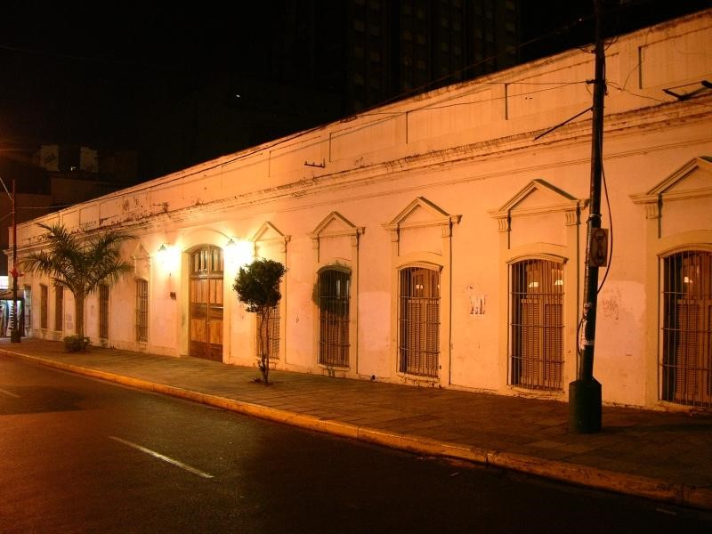

Building of the Faculty of Law and Social Sciences
Current name: Postgraduate degree in Law and Social Sciences (UNA)
Other names: Former Residence of Madame Lynch
Historical aspects
The origins of this property date back to 1853, when the property covered the entire block between the streets: Eligio Ayala, Yegros, Mariscal Estigarribia and Iturbe. In this block, lived the last diocesan bishop of the colonial era: Fray Francisco Pedro Benito García de Panés.
This work is one of the unique ones from the period of Don Carlos Antonio López, which maintains the guidelines of colonial architecture, with certain neoclassical ornamental elements on its main façade.
Marshal Francisco Solano López acquired the property at a public auction and had the mansion built and given to the Irish Elisa Alicia Lynch, his partner at the time, for her residence.
Some data refer that the building located on Calle Mariscal Estigarribia corner Yegros, that the project and construction of the building is attributed to Alessandro Ravizza, other data refer that the initial project was by Francisco Wisner de Morgensten, an Engineer of Hungarian nationality, who carried out the work of the building located on the former San Blás street (today Yegros street), there the main block (with two floors) was located and on the current Mariscal Estigarribia street on the corner of Yegros the block that corresponded to the social sector was located or reception halls, where Madam Lynch organized lunches, dinners, dances, etc., with the beautiful central patio and leafy garden. Diplomatic guests and people of Arts and Letters of the time attended these receptions.
When the Allied forces invaded the Paraguayan capital, the mansion was looted and occupied by Brazilian troops, and became a Hospital (year 1869). Later, once the war ended in 1870, the provisional government confiscated Marshal López's assets, declaring them "Property of the Nation", including Madame Lynch's mansion.
During the government of Pdte. of the Republic at the time: Don Salvador Jovellanos, the fiscal properties were sold, and among them the Lynch house, which was acquired by the firm Travassos & Cía. Later, this company, in 1881, sold the property to the Ministry of Education (National College) which further expanded the land. In 1889, the old Lynch house, by order of the Secondary and Superior Council, became the headquarters of the National University.
In the Post War of the Triple Alliance, in the year 1870, the entire building was the venue where many young people who honored the country in its resurgence after the War of 70 were organized.
Formal Description: From the point of view of applied technology: The building pattern of colonial architecture with details of neoclassicism is observed. Enclosures of masonry walls of ceramic bricks and plaster. Spatial organizations are simple. Modified ornamental elements stand out, as well as the original dimensions of the openings. An internal gallery is observed that constitute formal elements of Paraguayan architecture.
Typology: U-shaped architectural floor plan with internal patio
Description The building: It is implanted in an important corner of the Historic Center of the city, it does not have an ochava like any construction from the Franco era, it has adjoining buildings on Mariscal Estigarribia street. It has been built on the municipal limit or sidewalk. According to background information The building was initially made up of adobe walls, an internal gallery with wooden pillars, a tiled roof and colonial tiles on wooden braces (beams, rafter braces). Subsequently, over the years, the construction was expanded and constructive elements were added, such as masonry walls of ceramic and plastered bricks, vaults, iron fittings in the wooden openings, calcareous tile floors, the wooden pillars were replaced by masonry pillars, among others. It should be noted that the building was built on a municipal line and does not have an octagonal line.
Subsequently, new constructions were annexed to the property, such as: El Colegio
Nacional Asunción Escalada, and the Faculty of Social Sciences.
Observations According to historical data: After the occupation of the city of Asunción in 1869, the building was used as a hospital by the Brazilian Army, it was a period in which said mansion was quite depredated. Later, once in the hands of the Paraguayan State, the property was dismembered in two, leaving the sector on Eligio Ayala Street, destined for the current Asunción Escalada National School, and the sector on Mariscal Estigarribia Street on the corner of Yegros, which was occupied at the beginning of the 20th century, for the headquarters of the Faculty of Law and Social Sciences, also serving as to the National Library and Rectorate of the National University of Asunción.
In 1957 it was the headquarters of the Faculty of Architecture for a few years. Today in this building work: Postgraduate Law and Social Sciences of the UNA. and Faculty of Social and Political Sciences of the UNA.
Bibliography
Gutierrez, Ramon. Urban and Architectural Evolution of Paraguay. 1537-1911. Community Editions. Asuncion, Paraguay. Page consulted 223
Barreto Valinotti Ana. Work Elisa Alicia Lynch. Protagonists Collection No. 4
www.una.py>research>journal>vol.3
Luis Verón-Journalist and Historian, Essayist for abc color newspaper-20/X/2002
National Secretariat of Culture - General Directorate of Cultural Heritage - Heritage Registry Directorate - Cultural Heritage Registry Department
Municipality of Asunción-General Directorate of Urban Development- Urban Planning Directorate- Department of Cultural Heritage
Linking with other tabs
Link National Identification Card of the Immovable Cultural Good-Heritage Registry Directorate-General Directorate of Cultural Heritage of the National Secretariat of Culture. Building Inventory File Year 1990-Historic Center Office - Municipality of Asunción.
Work team
Cataloger Arch. Mirtha Ibarra C.
Collaborators Arch. Clarisse Insfrán Echauri.
Other Collaborators Func. Gustavo Barrios Alvarez.
Component entity Heritage Registry Directorate
Data collection date 04/30/2020
Operator Clarisse Insfrán
Registration date 04/30/2020